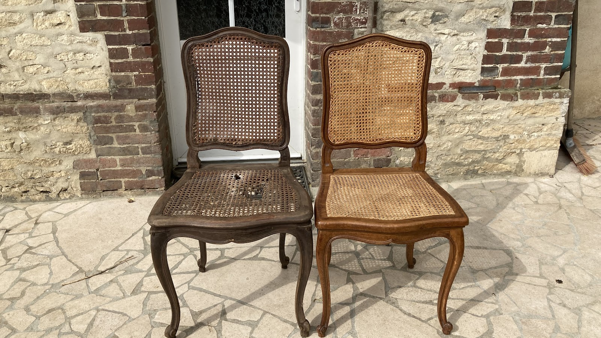

Rempaillage, cannage, tapisserie traditionnelle — depuis 2006 à Neuilly-sur-Seine, nous restaurons vos sièges selon les gestes qui ne s'apprennent pas en un jour. Devis gratuit sur simple envoi de photos.
Envoyer mes photos pour un devisLa paille de seigle ou le jonc marin, torsadés main, rendent à une chaise son assise d'origine — et des décennies de vie supplémentaire.
Six brins croisés, une rainure, une alêne. Le cannage traditionnel ne tolère ni agrafe, ni colle. Chaque brin est tendu et bloqué à la main dans la rainure d'origine.
Garnissage au crin végétal exclusivement. Ressorts guindés, sanglage à l'ancienne, tissu tendu au clou cavalier. Aucune mousse polyuréthane n'entre dans l'atelier.
Installé rue Madeleine Michelis à Neuilly-sur-Seine, l'atelier reçoit sur rendez-vous. Ici, on ne sous-traite rien. Chaque pièce est restaurée intégralement sur place, par la même main, du dégarnissage au cloutage final.
Les délais dépendent de ce qu'on trouve sous le tissu — ils ne se négocient pas. Un siège bien restauré peut traverser trois générations ; cela prend le temps que cela prend.
4,9 ★ sur Google — 7 avis vérifiés
Nous nous déplaçons pour enlèvement et livraison dans tout l'Ouest parisien. L'atelier est situé au 40 rue Madeleine Michelis, à deux pas de la Porte Maillot et du Bois de Boulogne.
Monsieur le rempailleur canneur 92
40 Rue Madeleine Michelis
92200 Neuilly-sur-Seine
📞 07 67 05 46 40
✉️ 40monsieur.le.rempailleur.canneur92@gmail.com